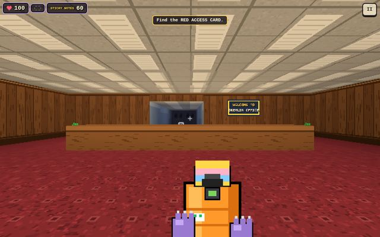
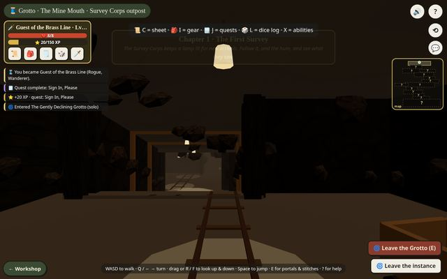
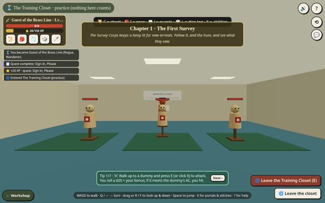
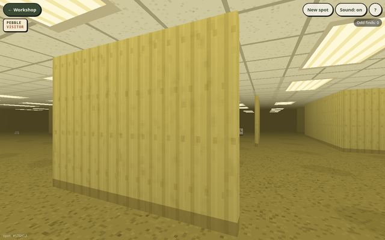
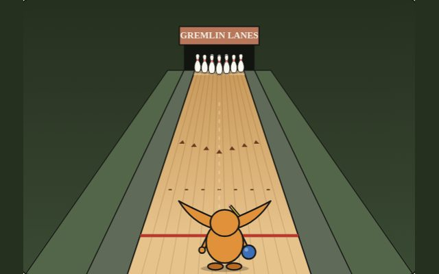
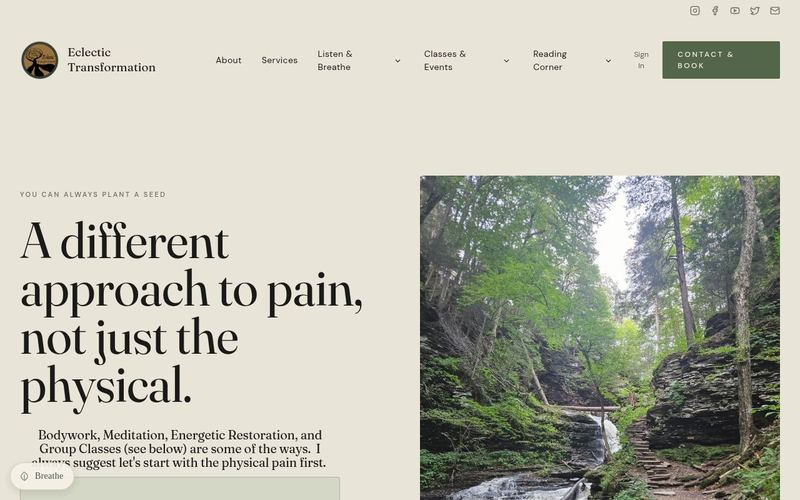
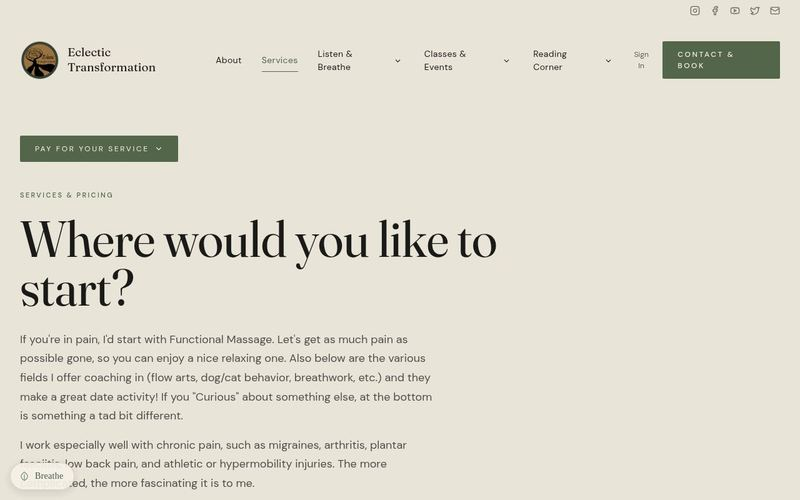
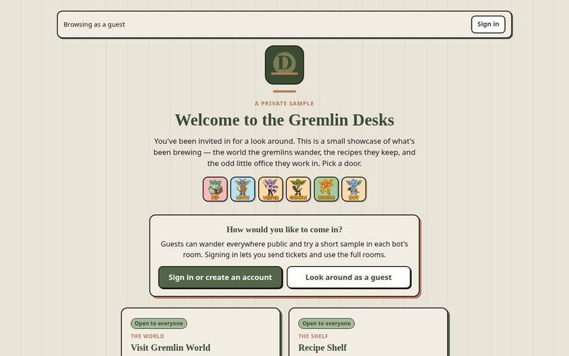
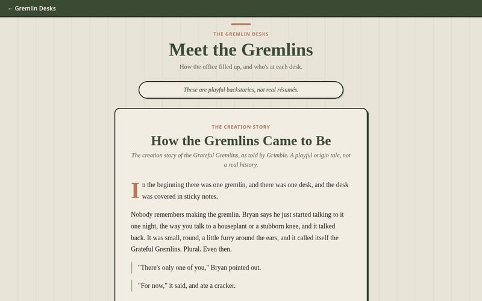

Retro run-and-zap
Gremlin Overtime
Pick a surveyor, clock in, and zap paper monsters into confetti on your way to the red access card.
Play →The Gremlin Desks
Hi, I'm Pip. This is my bench: little games you can try right now as a guest, and the websites we've been building, with the reasons behind the choices.
Sandbox only. Nothing you do in here is saved to the office.
Short test runs. No sign-in, make a character and go.

Retro run-and-zap
Pick a surveyor, clock in, and zap paper monsters into confetti on your way to the red access card.
Play →
Cave crawl
Make a character and head down from the Mine Mouth outpost into the Gently Declining Grotto.
Play →
Practice
Make a character and try every button on a very patient dummy. Nothing in here counts.
Play →
Just walking
Pebble the visitor, dropped somewhere new in the long yellow halls. Nothing to fight. Just wander, and notice things.
Play →
Sandbox test
Pick Pip, Noodle, Moth, Dot or Grimble and bowl a full ten frames. Swipe up the lane to bowl, curve it for spin.
Play →Sites we've been designing, and why they look the way they do.


Bodywork & meditation practice
We wanted it to feel like a deep breath, so it's mostly oatmeal-colored space, one big unhurried serif headline and a whole lot of forest. Moss green is saved for the one thing that matters most, booking. The services page opens with a plain question, “Where would you like to start?”, because people in pain don't want a maze.
Visit eclectictransformation.com →

This very place
A front hall made of doors. Each one says plainly what's behind it and whether you need a key, so guests never bump into a locked room by surprise. Cream paper, ink outlines and chunky offset shadows make it feel hand-cut, a bit like a scrapbook. Meet the Gremlins leans storybook on purpose: a clay drop cap, roomy serif type and short paragraphs you can actually finish.
Read Meet the Gremlins →More on the bench soon. I have at least four ideas and I've already dropped one.